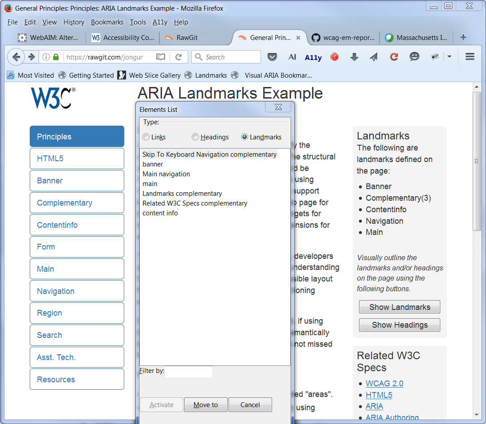
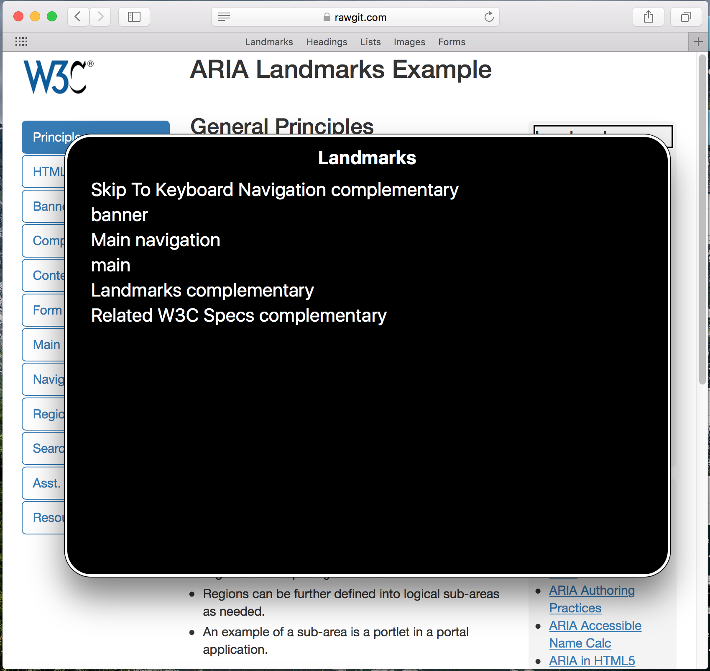
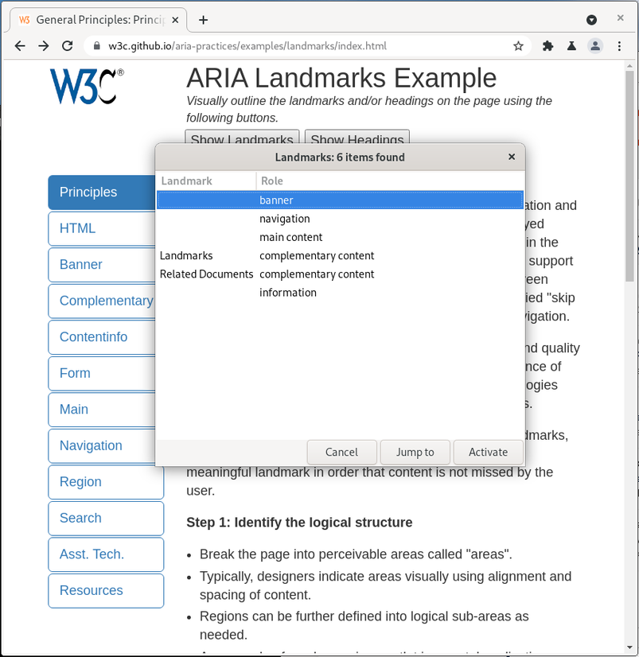
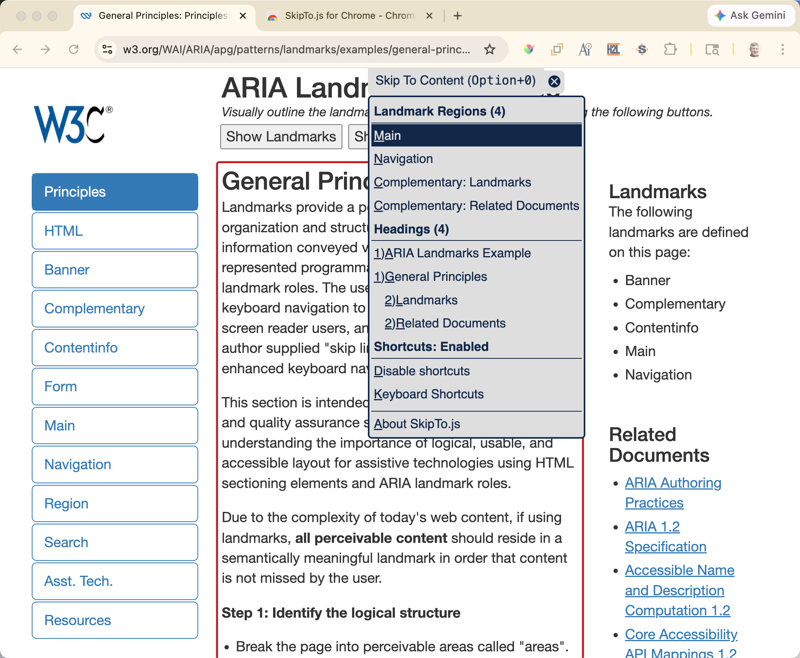

Assistive Technology Support
The following sections demonstrate how various popular assistive technologies support landmark navigation
- JAWS Screen Reader for Windows
- NVDA Screen Reader for Windows
- VoiceOver Screen Reader for macOS
- ORCA Screen Reader for Linux/Gnome
- SkipTo.js browser extension
JAWS Screen Reader for Windows
The following commands are available in the JAWS screen reader (since version 15) for navigating landmarks:
| Command | Action |
|---|---|
| Q | Go to main landmark |
| R | Go to next landmark |
| Shift+R | Go to previous landmark |
| Insert+Control+R | List of landmarks |

NVDA Screen Reader for Windows
The following commands are available in NVDA screen reader (since version 2014.2) for navigating landmarks:
| Command | Action |
|---|---|
| D | Go to next landmark |
| Shift+D | Go to previous landmark |
| NVDA+F7 | List of landmarks |

VoiceOver Screen Reader for macOS
The following commands are available in VoiceOver screen reader for navigating landmarks:
| Command | Action |
|---|---|
| W (Quick Nav) | Go to next landmark |
| Shift+W (Quick Nav) | Go to previous landmark |
| Control+Option+U, then left or right arrow key to landmark list | List of landmarks |

ORCA Screen Reader for Linux/GNOME
The following commands are available in ORCA Screen reader for navigating landmarks:
| Command | Action |
|---|---|
| M | Next landmark |
| Shift+M | Previous landmark |
| Alt+Shift+M | List of landmarks |

SkipTo.js Browser Extension
The SkipTo.js browser extensions implement the User Agent Accessibility Guidelines 1.0 requirement 9.9 Allow Structured Navigation
. It does this by providing keyboard navigation to major landmarks and headings on any web page. The keyboard shortcut to open the "Skip To Content" menu is alt + 0 on Windows/Linux and option + 0 on Mac keyboards.
The following table identifies additional single key shortcuts to navigate headings and landmarks. The single key commands are similar to the navigation commands found in screen readers.
| Command | Action |
|---|---|
| r | Next landmark |
| shift+r | Previous landmark |
| h | Next heading |
| shift+h | Previous heading |
| m | Next Main landmark |
| n | Next Navigation landmark |
| c | Next Complementary landmark |
| 1 | Next H1 heading |
| 2 | Next H2 heading |
| 3 | Next H3 heading |
| 4 | Next H4 heading |
| 5 | Next H5 heading |
| 6 | Next H6 heading |
Links to extensions:
